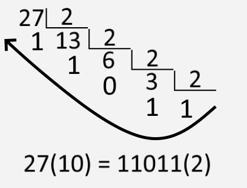
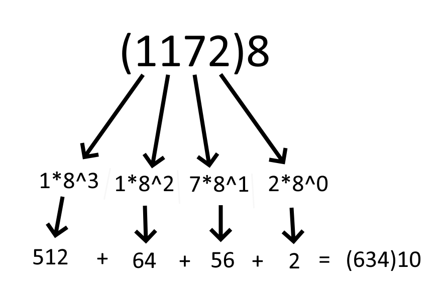
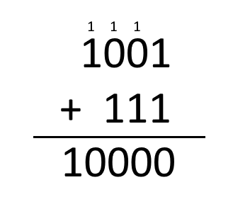
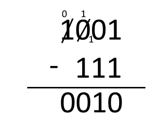
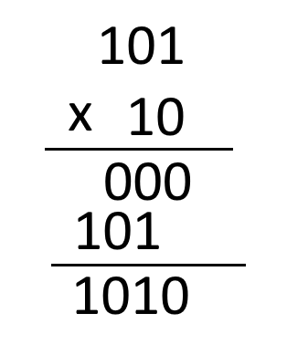
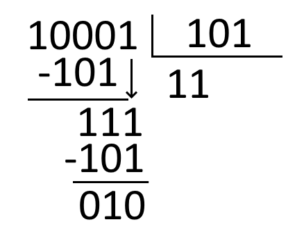
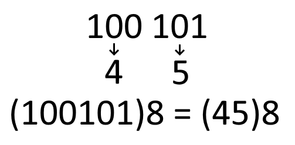
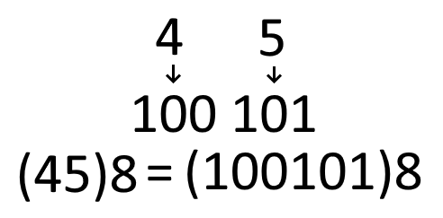
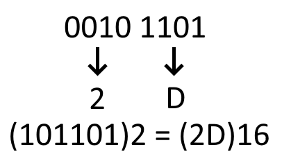
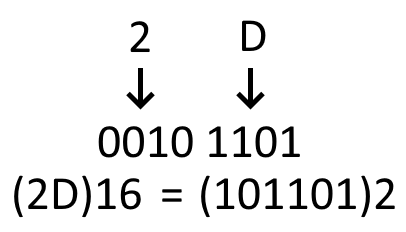

Aprendi este conteúdo com facilidade pois foi de fácil entendimento e as conversões utilizam apenas as operações básicas da matemática, não envolvem nada extremo, tirando os números gigantes que podem aparecer, que de vez em quando podem confundir.
Sistemas de numeração são conjuntos de símbolos que são utilizados para representar quantias numéricas. Um sistema com dez símbolos é chamado de Sistema de Base 10 ou Sistema decimal.
Neste conteúdo foram estudados os seguintes sistemas:
O sistema binário contém 2 símbolos: 0 e 1. Eles são utilizados para representar todos os números. A forma que eles são usados para representar os números é a mesma do sistema decimal, pela ordem crescente: 0, 1, 10, 11, 100, 101 e assim por diante.
Para converter números da base 10 para a base 2 se utiliza o método de divisão sucessiva, divindo por 2.
Para converter números da base 2 para a base 10 se utiliza a regra de decomposição. Cada digito deve ser multiplicado por potências de 2, começando com 2^0.
É possivel transformar qualquer número decimal em alguma outra base utilizando a regra das divisões sucessivas.
Faça a divisão do número decimal pela base na qual você quer converter, nesse caso 2, o sistema binário, então guarde o resto e divida novamente o quociente pela base X até que ele seja menor que a base. O número na base X será a sequência dos restos obtidos junto com o último quociente, começando pela direita.
É possivel transformar qualquer número de base não decimal em base decimal usando o método de decomposição de número.
Cada digito deve ser multiplicado por potências da base X, por exemplo 8. O último digito é multiplicado por 8^0, o penúltimo multiplicado por 8^1, o antepenúltimo por 8^2 e assim sucessivamente até acabar os dígitos.
A operação de adição com números binários seguem as mesmas regras dos números decimais.
Observar na adição:
1 + 1 = 10 > O "0" permanece e o "1" vai para a próxima casa.
1 + 1 + 1 = 11 > O "1" permanece e o outro "1" vai para a próxima casa.
A operação de subtração com números binários seguem as mesmas regras dos números decimais.
Observar na subtração:
0 - 1 = 1 > Quando isso ocorrer, precisamos pedir emprestado, então fica 10 - 1 = 1
As operações de multiplicação com números binários seguem as mesmas regras dos números decimais.
As operações de multiplicação com números binários seguem as mesmas regras dos números decimais. O quociente sempre será 0 ou 1.
O sistema octal contém 8 símbolos: 0, 1, 2, 3, 4, 5, 6 e 7. Eles são utilizados para representar todos os números. A forma que eles são usados para representar os números é a mesma do sistema decimal, pela ordem crescente.
Para converter números da base 10 para a base 8 se utiliza o método de divisão sucessiva, divindo por 8.
Para converter números da base 8 para a base 10 se utiliza a regra de decomposição. Cada digito deve ser multiplicado por potências de 8, começando com 8^0.
Já que 8 é uma potência de 2 (2^3), é possível converter da base 2 diretamente para a base 8 utilizando uma tabela de equivalência:
| Binário | Octal |
|---|---|
| 000 | 0 |
| 001 | 1 |
| 010 | 2 |
| 011 | 3 |
| 100 | 4 |
| 101 | 5 |
| 110 | 6 |
| 111 | 7 |
Precisamos de 3 digitos binários para 1 octal, e caso o número binário não tenha 3 digitos, basta adicionar zeros a esquerda para completar.
Primeiramente, separe o número binário em grupos de 3 começando pela direita, acrescentando zeros a esquerda caso algum grupo não tenha 3 dígitos. Usando a tabela de equivalência, substitua cada grupo pelo octal equivalente.
Também é possivel fazer o processo contrário, indo de um número de base 8 para um número de base 2. Fazendo o contrário do que foi feito antes.
O sistema hexadecimal contém 16 símbolos: 0, 1, 2, 3, 4, 5, 6, 7, 8, 9, A, B, C, D, E e F. Eles são utilizados para representar todos os números. A forma que eles são usados para representar os números é a mesma do sistema decimal, pela ordem crescente.
Para converter números da base 10 para a base 16 se utiliza o método de divisão sucessiva, divindo por 16. E quando for juntar os restos com o último quociente, substituir os números acima de 10 pelos seus equivalentes em letras:
| Decimal | Hexadecimal |
|---|---|
| 10 | A |
| 11 | B |
| 12 | C |
| 13 | D |
| 14 | E |
| 15 | F |
Para converter números da base 16 para a base 10 se utiliza a regra de decomposição. Cada digito deve ser multiplicado por potências de 16, começando com 16^0 e substituindo as letras pelos seus equivalentes em números.
Já que 16 é uma potência de 2 (2^4), é possível converter da base 2 diretamente para a base 16 utilizando uma tabela de equivalência:
| Binário | Hexadecimal |
|---|---|
| 0000 | 0 |
| 0001 | 1 |
| 0010 | 2 |
| 0011 | 3 |
| 0100 | 4 |
| 0101 | 5 |
| 0110 | 6 |
| 0111 | 7 |
| 1000 | 8 |
| 1001 | 9 |
| 1010 | A |
| 1011 | B |
| 1100 | C |
| 1101 | D |
| 1110 | E |
| 1111 | F |
Precisamos de 4 digitos binários para 1 hexadecimal, e caso o número binário não tenha 4 digitos, basta adicionar zeros a esquerda para completar.
Primeiramente, separe o número binário em grupos de 4 começando pela direita, acrescentando zeros a esquerda caso algum grupo não tenha 4 dígitos. Usando a tabela de equivalência, substitua cada grupo pelo hexadecimal equivalente.
Também é possivel fazer o processo contrário, indo de um número de base 16 para um número de base 2. Fazendo o contrário do que foi feito antes.
